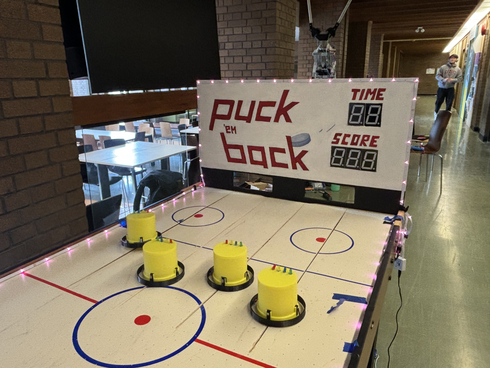
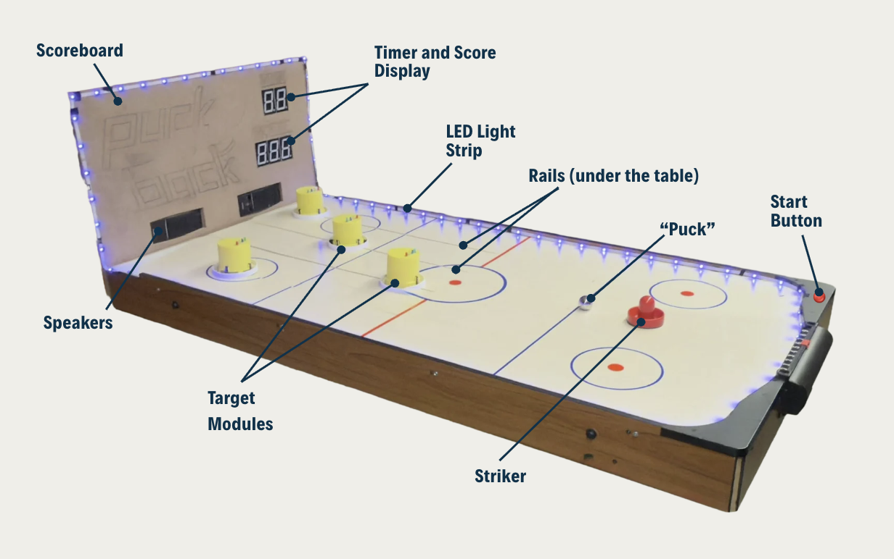
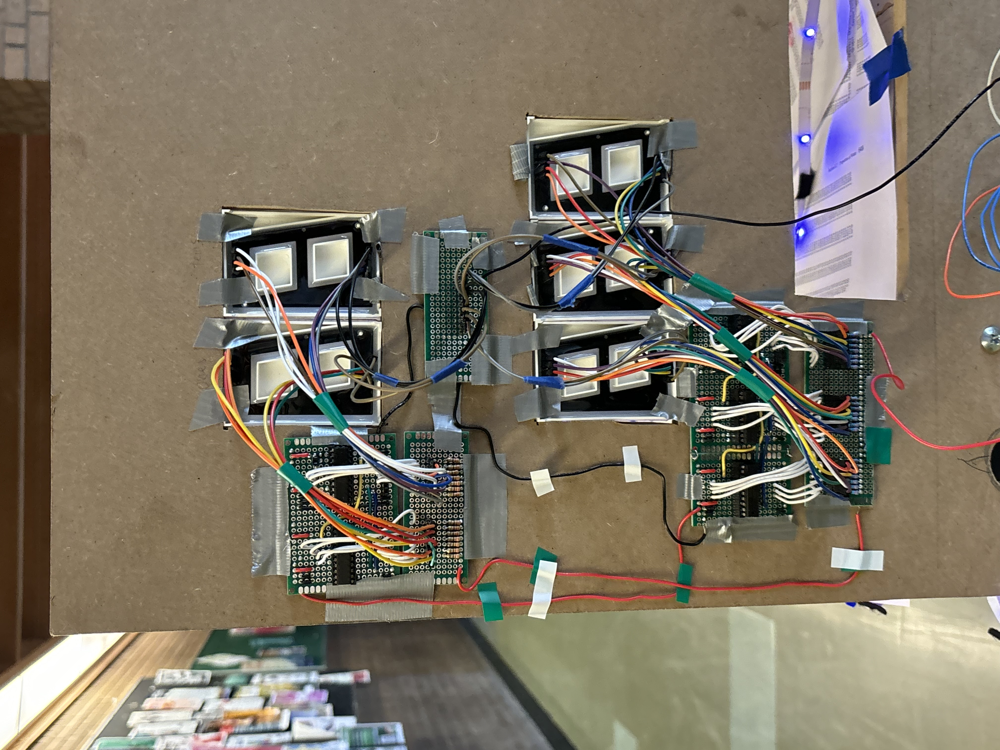
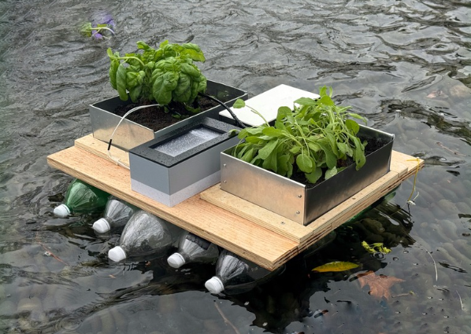
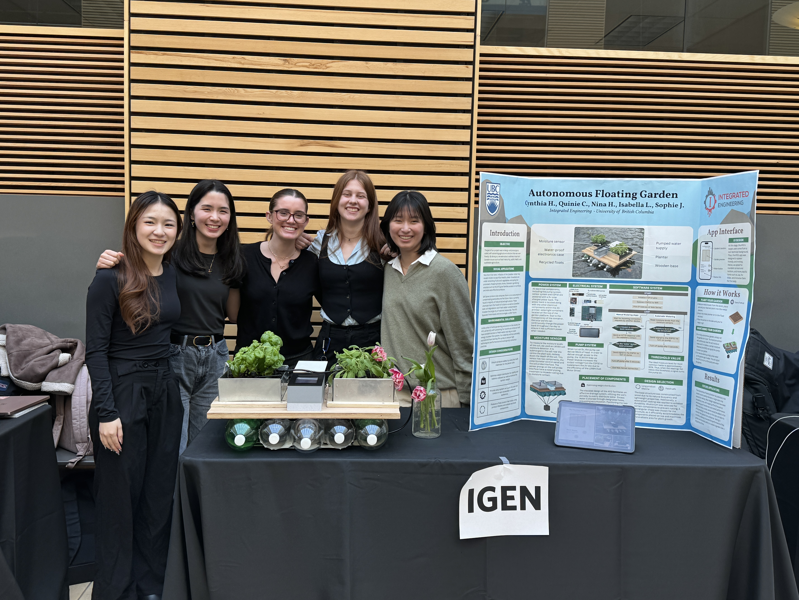
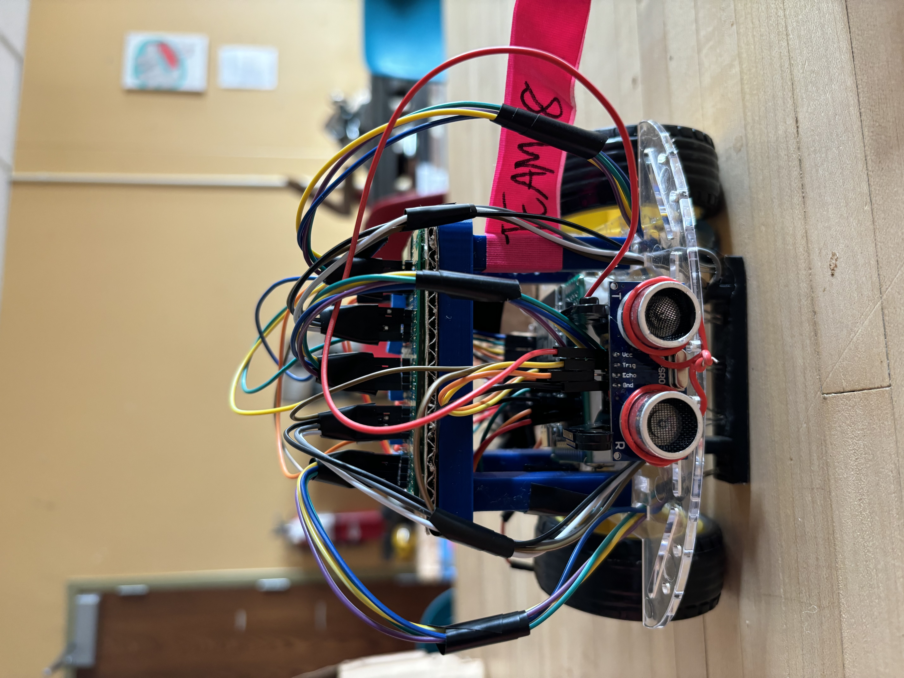

Puck 'em Back
OVERVIEW
Puck 'em Back is an arcade game inspired by Plants vs. Zombies based off of air hockey table mechanisms. The premise of the game is for the user to use the hockey puck to hit the zombies and prevent them from crossing the red line. Once a zombie crosses the red line, they've invaded and you're out.



KEY SKILLS
- Circuit Design
- Soldering
- Arduino
- C++
- Systems Integration
KEY CONTRIBUTIONS
- Designed and painted the scoreboard layout
- Designed and soldered the electrical circuit for the timer and scoring display using shift registers, Arduino, and 7 segment displays
- Final systems integration, integrating the mechanical motors with timer and hit detection and audio
Autonomous Floating Garden
OVERVIEW
This is a fully self watering garden that can float on any fresh body of water. Powered by a solar powered battery pack, this allows users to be away from their gardens for long periods of time.


KEY SKILLS
- Woodworking / Power Tools (Mitre Saw, Band Saw, Drill Press)
- SolidWorks
- ESP 32
- Sensor and Systems Integration
KEY CONTRIBUTIONS
- Built the prototype with plywood and sheet metal, utilizing the mitre saw, drill press, power tools, and sheet metal bender
- Systems validation testing performed on the irrigation system
- Systems integration and testing, ensuring structure can float and will keep the plants alive by itself
Autonomous Line Following Robot
OVERVIEW
This is a fully autonomous line-following robot made with using IR sensors and controlled by an ESP 32.

KEY SKILLS
- SolidWorks
- ESP 32
- IR sensor integration
KEY CONTRIBUTIONS
- Designed and iterated multiple prototypes using SolidWorks to create an IR sensor bracket through 3D printing that ensured optimal line detection performance
- Soldered PCB components to connect the IR sensors with the ESP 32 board, ensuring seamless circuit integration